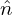
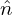

The perturbed distribution function δF given in Eq. (145) contains two terms. The first term is gyro-phase dependent while the second term is gyro-phase independent. The perpendicular velocity moment of the second term will give rise to the so-called diamagnetic flow. For this case, it is crucial to distinguish between the distribution function in terms of the guiding-center variables, fg(X,v), and that in terms of the particle variables, fp(x,v). In terms of these denotations,  equation (145) is written as
|
| (271) |
Next, consider the perpendicular flow U⊥ carried by δfg. This flow is defined by the corresponding distribution function in terms of the particle variables, δfp, via,
 | (272) |
where n is the number density defined by n = ∫ δfpdv. Using the relation between the particle distribution function and guiding-center distribution function, equation (272) is written as
 | (273) |
Using the Taylor expansion near x, δfg(x −ρ,v) can be approximated as
 | (274) |
Plugging this expression into Eq. (273), we obtain
 | (275) |
As mentioned above, δfg(x,v) is independent of the gyro-angle α. It is obvious that the first integration is zero and thus Eq. (275) is reduced to
 | (276) |
Using the definition ρ = −v × e∥∕Ω, the above equation is written
where H = ×∇δfg(x,v), which is independent of the gyro-angle α because both e∥(x)∕Ω(x) and
δfg(x,v) are independent of α. Next, we try to perform the integration over α in Eq. (277). In terms of
velocity space cylindrical coordinates (v∥,v⊥,α), v⊥ is written as
×∇δfg(x,v), which is independent of the gyro-angle α because both e∥(x)∕Ω(x) and
δfg(x,v) are independent of α. Next, we try to perform the integration over α in Eq. (277). In terms of
velocity space cylindrical coordinates (v∥,v⊥,α), v⊥ is written as
 | (278) |
where  and  are two arbitrary unit vectors perpendicular each other and both perpendicular to
B0(x). H can be written as
and  are two arbitrary unit vectors perpendicular each other and both perpendicular to
B0(x). H can be written as
 | (279) |
where Hx and Hy are independent of α. Using these in Eq. (277), we obtain
![∫
nU ⊥ = v⊥ (xˆcosα+ ˆy sinα )v⊥ (Hx cosα + Hy sinα)dv
∫
= v2⊥ [ˆx(Hx cos2α+ Hy sin αcosα) +yˆ(Hx cosα sinα + Hy sin2α)]dv. (280)](nonlinear_gyrokinetic_equation314x.png)

 
 

![∫ ∫ ∫
nU = ∞ dv ∞ v dv 2πv2[ˆx(H cos2α + H sinα cosα)+ ˆy(H cosαsin α +H sin2α)]dα
⊥ −∞ ∥ 0 ⊥ ⊥ 0 ⊥ x y x y
∫ ∞ ∫ ∞ ∫ 2π
= dv∥ v⊥dv⊥ v2⊥(ˆxHx cos2α+ ˆyHy sin2α)dα
∫−∞∞ ∫ 0∞ 0
= dv∥ v⊥dv⊥ [v2⊥(ˆxHx π+ ˆyHy π)]
∫−∞ ∫ 0
∞ ∞ 2
= −∞ dv∥ 0 v⊥dv⊥ [v⊥H π]
∫ ∞ ∫ ∞ e
= dv∥ v⊥dv⊥ [v2⊥ -∥× ∇ δfg(x,v)π]
−∞ ∫ 0∞ ∫ ∞ Ω
= e∥ × ∇ dv v dv δf (x,v)v2⊥2π
Ω −∞ ∥ 0 ⊥ ⊥ g 2
-e∥-
= m Ω × ∇ δp⊥, (281)](nonlinear_gyrokinetic_equation315x.png)